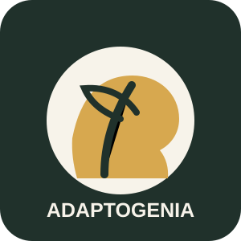

Natural
Productos inspirados en hongos funcionales y procesos de elaboración controlados.
Hongos adaptógenos · Patagonia · Bienestar
Adaptogenia es una propuesta patagónica orientada al desarrollo de productos simples, naturales y funcionales a base de hongos adaptógenos.
Quiero saber más
Extracto hidroalcohólico en gotero de 50 ml.
Productos inspirados en hongos funcionales y procesos de elaboración controlados.
Proyecto pensado desde Patagonia, con identidad territorial y mirada productiva.
Comunicación clara, consumo práctico y foco en hábitos sostenibles.
El primer producto proyectado es un extracto en gotero. El objetivo es iniciar con lotes pequeños, medir costos reales, escuchar a los usuarios y mejorar la presentación.
La línea puede ampliarse hacia blends de té, cajas de regalo y experiencias educativas sobre bienestar, ciencia aplicada y producción local.
Para consultas, pedidos o colaboraciones, podés escribir a: